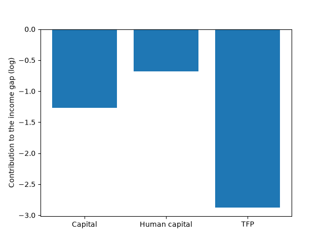
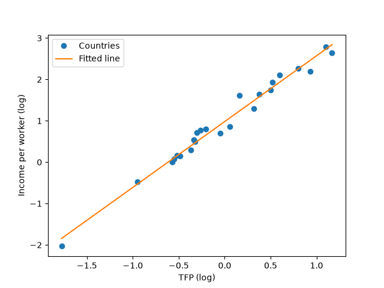

第 1 章: 発展会計¶
1.1 この章の地図¶
この章では、国によって所得が大きく違う理由を、生産関数から調べます。所得の差のうち、資本の差で説明できる部分と、説明できない部分（全要素生産性、TFP）を、関数とテストで求めます。
| 項目 | 内容 |
|---|---|
| 経済学の題材 | 発展会計: 生産関数 y = A·k^α·h^(1−α) と、所得の差の分解 |
| 使う Python の機能 | 関数、pandas の表（DataFrame）の列の計算、numpy の対数、テスト（pytest） |
| 新しく導入するライブラリ | なし（NumPy・pandas・Matplotlib は、第 1 シリーズ で学習済み） |
| 完成形 | tfp、load_countries、with_tfp、income_gap、variance_shares |
| ファイル | 実装: lib/chapter01/accounting.py、lib/chapter01/plot.py（発展会計の図）／テスト: test/chapter01/test_accounting.py、test/chapter01/test_plot.py（自分で書くときは、practice/chapter01/ に、同じ名前で作ります） |
| データ | data/countries.csv（架空の 24 か国。実在の統計ではありません） |
経済学の式とコードの対応¶
| 経済学 | 式 | コード |
|---|---|---|
| 生産関数 | y = A · k^α · h^(1−α) | （tfp が、この式を A について解く） |
| 全要素生産性 | A = y ÷ (k^α · h^(1−α)) | tfp(output, capital, human_capital, alpha) |
| 所得の差の分解 | ln(y ÷ y₀) = α·ln(k ÷ k₀) + (1−α)·ln(h ÷ h₀) + ln(A ÷ A₀) | income_gap(df, reference, alpha) |
| 所得の分散の分解 | Var(ln y) への、各項の共分散の割合 | variance_shares(df, alpha) |
記号について: y は労働者 1 人当たりの所得、k は労働者 1 人当たりの物的資本、h は人的資本（労働者の技能の水準）、A は全要素生産性（TFP）、α は資本分配率です。一覧は、記号について を参照してください。
前提とする第 1 シリーズの章¶
この記事は、Python の基礎を繰り返しません。次ができれば、読み進められます。
| できること | 第 1 シリーズの章 |
|---|---|
| 関数と pytest のテストを書く（Red → Green → Refactor） | 第 1〜6 章 |
NumPy の配列計算（np.log など） |
第 9 章 |
| pandas の表を読み込み、列を計算する | 第 11 章 |
| Matplotlib で図を描く | 第 7 章 |
1.2 準備¶
サンプルコードは、リポジトリの apps/macro-programming/python/ にあります。uv のインストールは、第 1 シリーズの第 1 章 の 1.2 節にあります。インストール済みなら、次の 3 行で、準備ができます。
cd apps/macro-programming/python
uv sync
uv run pytest test/chapter01
28 passed
自分でコードを書くときは、practice/chapter01/ を作って、完成形と同じ名前（accounting.py・test_accounting.py）のファイルに書きます。テストは、uv run pytest practice/chapter01 で実行します。完成形（lib/ と test/）は、答え合わせ用です。先に、自分で書いてから、見比べてください。
1.3 予想する¶
生産関数 y = A · k^(1/3) · h^(2/3) の国が、2 つあります（α = 1/3）。
| 所得 y | 物的資本 k | 人的資本 h | |
|---|---|---|---|
| 国 A | 2 | 8 | 1 |
| 国 B | 0.5 | 1 | 1 |
- 国 A の TFP（A）は、いくつですか（8^(1/3) = 2 を使います）
- 国 B の TFP は、いくつですか
- 国 B の所得は、国 A の 4 分の 1 です。この差の、何割が資本の差で、何割が TFP の差ですか
1.4 発展会計の考え方¶
生産関数と TFP¶
労働者 1 人当たりの生産関数を、y = A · k^α · h^(1−α) とします。
- y: 労働者 1 人当たりの所得
- k: 労働者 1 人当たりの物的資本（機械・建物など）
- h: 人的資本（教育・経験による、労働者の技能の水準）
- A: 全要素生産性（TFP）。資本と人的資本が同じでも、どれだけ多くを生み出せるか（技術・制度・効率など）
- α: 資本分配率。所得のうち、資本に支払われる割合（ここでは 1/3 とします）
y・k・h は、データから分かります。A は、直接は測れません。所得のうち、資本と人的資本では説明できない残りとして、求めます。これを、「残差」としての TFP と呼びます。
A は、測っているのではなく、残りです。 A には、技術だけでなく、制度・資源配分の効率・測定の誤差も含まれます。A が大きい、というのは、「資本と人的資本だけでは、所得の高さを説明できない」ということです。
所得の差を分ける¶
国 i と、基準の国（0）の、生産関数の対数をとります。
ln y = ln A + α·ln k + (1−α)·ln h
2 つの国の差をとると、所得の差を、3 つの寄与に分けられます。
ln(y ÷ y₀) = α·ln(k ÷ k₀) + (1−α)·ln(h ÷ h₀) + ln(A ÷ A₀)
右辺の第 1 項が資本、第 2 項が人的資本、第 3 項が TFP の寄与です。3 つの寄与の和が、所得の差（対数）にちょうど等しくなります（式の変形だけで成り立つ恒等式です）。
世界全体の所得の差を分ける¶
1 つの国と基準の国の比較ではなく、「国による所得の差」全体を調べるには、対数の所得の分散を使います。ln y = α·ln k + (1−α)·ln h + ln A なので、両辺と ln y との共分散をとると、
Var(ln y) = Cov(ln y, α·ln k) + Cov(ln y, (1−α)·ln h) + Cov(ln y, ln A)
両辺を Var(ln y) で割ると、3 つの割合の合計が 1 になります。各項の割合が、「その要因が、所得の差のどれだけを説明するか」です。
この章のデータ¶
data/countries.csv は、架空の 24 か国の、労働者 1 人当たりの所得（y）、物的資本（k）、人的資本（h）です（単位は、架空のものです）。実在の国・年の統計ではありません。
| 項目 | 内容 |
|---|---|
| 列 | country（国名 C01〜C24）、y、k、h |
| 並び | 所得 y の高い順（C01 が最も豊か、C24 が最も貧しい） |
| 作り方 | 生産関数 y = A·k^(1/3)·h^(2/3) を、ちょうど満たすように作りました。「発展の度合い」が高い国ほど、k・h・A が、そろって高くなる設定です（種を固定した乱数で作成しました） |
実際の統計（Penn World Table）で試す手順は、第 1 部の終わり（第 7 章）にあります。
1.5 プログラミング¶
Red: TFP のテスト¶
最初のテストは、手計算できる値にします。α = 1/3、k = 8 なら、k^(1/3) = 2 です。
def test_TFPは所得を資本と人的資本の寄与で割った残差() -> None:
# k^(1/3) = 2、h^(2/3) = 1 なので、y = 2 のとき、A = 2 ÷ 2 = 1
assert tfp(output=2, capital=8, human_capital=1, alpha=ALPHA) == pytest.approx(1)
def test_資本と人的資本が同じでも所得が2倍ならTFPも2倍() -> None:
low = tfp(output=2, capital=8, human_capital=1, alpha=ALPHA)
high = tfp(output=4, capital=8, human_capital=1, alpha=ALPHA)
assert high == pytest.approx(2 * low)
def test_資本分配率が0_5のとき() -> None:
# y = 4、k = 4、h = 4 のとき、A = 4 ÷ (4^0.5 × 4^0.5) = 1
assert tfp(output=4, capital=4, human_capital=4, alpha=0.5) == pytest.approx(1)
入力が経済学の意味を持たない場合（資本分配率が 0 以下や 1 以上、所得・資本・人的資本が 0 以下）も、テストで先に決めます。対数や累乗が、意味のない値を返す前に、エラーにします。
@pytest.mark.parametrize("alpha", [0, 1, -0.1, 1.5])
def test_資本分配率は0より大きく1より小さくなければならない(alpha: float) -> None:
with pytest.raises(ValueError, match="資本分配率"):
tfp(output=2, capital=8, human_capital=1, alpha=alpha)
@pytest.mark.parametrize("name", ["output", "capital", "human_capital"])
def test_所得_資本_人的資本は正でなければならない(name: str) -> None:
values = {"output": 2.0, "capital": 8.0, "human_capital": 1.0}
values[name] = 0.0
with pytest.raises(ValueError, match="正"):
tfp(**values, alpha=ALPHA)
Green: tfp を実装する¶
def _check_alpha(alpha: float) -> None:
if not 0 < alpha < 1:
raise ValueError("資本分配率は 0 より大きく 1 より小さくなければならない")
def tfp(output: float, capital: float, human_capital: float, alpha: float) -> float:
"""TFP A = y ÷ (k^α · h^(1−α)) を返す。"""
_check_alpha(alpha)
if min(output, capital, human_capital) <= 0:
raise ValueError("所得・資本・人的資本は正でなければならない")
return float(output / (capital**alpha * human_capital ** (1 - alpha)))
データを読み込む¶
テストは、一時ファイルに作った小さな CSV と、同梱のデータで書きます。
def test_CSVを読むと国名が行の名前になる(tmp_path: Path) -> None:
path = tmp_path / "countries.csv"
path.write_text("country,y,k,h\nA,2.0,8.0,1.0\nB,0.5,1.0,1.0\n", encoding="utf-8")
df = load_countries(path)
assert list(df.index) == ["A", "B"]
assert list(df.columns) == ["y", "k", "h"]
assert df.loc["A", "k"] == 8.0
def test_同梱のデータは24か国で所得の高い順に並んでいる() -> None:
df = load_countries()
assert len(df) == 24
assert df.index[0] == "C01"
assert df["y"].is_monotonic_decreasing
def load_countries(path: Path = DEFAULT_DATA_PATH) -> pd.DataFrame:
"""CSV を読み込み、国名を行の名前にした表（列は y・k・h）を返す。"""
return pd.read_csv(path, index_col="country")
TFP の列を足す¶
def two_countries() -> pd.DataFrame:
"""基準の国（A = 1、k = 8、h = 1、y = 2）と、貧しい国（A = 0.5、k = 1、h = 1）。"""
return pd.DataFrame(
{"y": [2.0, 0.5], "k": [8.0, 1.0], "h": [1.0, 1.0]},
index=pd.Index(["rich", "poor"], name="country"),
)
def test_TFPの列を足しても元の表は変わらない() -> None:
df = two_countries()
result = with_tfp(df, ALPHA)
assert result["tfp"].tolist() == pytest.approx([1.0, 0.5])
assert "tfp" not in df.columns
two_countries は、予想する節の 2 つの国です。DataFrame.assign は、元の表を変えずに、列を足した新しい表を返します。
def with_tfp(df: pd.DataFrame, alpha: float) -> pd.DataFrame:
"""TFP の列（tfp）を足した表を返す。元の表は変えない。"""
_check_alpha(alpha)
if (df[["y", "k", "h"]] <= 0).any().any():
raise ValueError("所得・資本・人的資本は正でなければならない")
return df.assign(tfp=df["y"] / (df["k"] ** alpha * df["h"] ** (1 - alpha)))
所得の差を 3 つに分ける¶
def test_基準の国との所得の差を3つの寄与に分ける() -> None:
gap = income_gap(two_countries(), reference="rich", alpha=ALPHA)
# 所得の差 ln(0.5 ÷ 2) = ln(1 ÷ 4)。資本 (1/3)·ln(1 ÷ 8)、人的資本 0、TFP ln(0.5)
assert gap.loc["poor", "total"] == pytest.approx(np.log(0.25))
assert gap.loc["poor", "capital"] == pytest.approx(np.log(1 / 8) / 3)
assert gap.loc["poor", "human_capital"] == pytest.approx(0)
assert gap.loc["poor", "tfp"] == pytest.approx(np.log(0.5))
def test_所得の差の半分は資本で半分はTFP() -> None:
gap = income_gap(two_countries(), reference="rich", alpha=ALPHA)
row = gap.loc["poor"]
assert row["capital"] / row["total"] == pytest.approx(0.5)
assert row["tfp"] / row["total"] == pytest.approx(0.5)
def test_3つの寄与の和は所得の差と等しい() -> None:
gap = income_gap(load_countries(), reference="C01", alpha=ALPHA)
parts = gap["capital"] + gap["human_capital"] + gap["tfp"]
assert parts.to_numpy() == pytest.approx(gap["total"].to_numpy())
3 つ目のテストは、手計算の値ではなく、恒等式を確かめています。全 24 か国で、3 つの寄与の和が、所得の差と一致します。
def income_gap(df: pd.DataFrame, reference: str, alpha: float) -> pd.DataFrame:
"""基準の国との所得の差（対数の差）を、資本・人的資本・TFP の寄与に分ける。
ln(y ÷ y₀) = α·ln(k ÷ k₀) + (1−α)·ln(h ÷ h₀) + ln(A ÷ A₀)。
列は capital・human_capital・tfp・total（total は、3 つの寄与の和）。
"""
table = with_tfp(df, alpha)
if reference not in table.index:
raise ValueError(f"基準の国 {reference} が、データにない")
logs = table[["y", "k", "h", "tfp"]].apply(np.log)
diff = logs - logs.loc[reference]
return pd.DataFrame(
{
"capital": alpha * diff["k"],
"human_capital": (1 - alpha) * diff["h"],
"tfp": diff["tfp"],
"total": diff["y"],
}
)
分散で、世界全体の差を分ける¶
def test_分散の割合は3つで合計1() -> None:
shares = variance_shares(load_countries(), alpha=ALPHA)
assert shares.sum() == pytest.approx(1)
assert list(shares.index) == ["capital", "human_capital", "tfp"]
def test_所得の差がすべてTFPの差ならTFPの割合は1() -> None:
a = np.array([0.5, 1.0, 2.0, 4.0])
df = pd.DataFrame(
{"y": a * 2.0, "k": [8.0] * 4, "h": [1.0] * 4},
index=pd.Index(list("wxyz"), name="country"),
)
shares = variance_shares(df, alpha=ALPHA)
assert shares["tfp"] == pytest.approx(1)
assert shares["capital"] == pytest.approx(0)
def test_所得に差がなければ分散の割合は求められない() -> None:
df = pd.DataFrame(
{"y": [2.0, 2.0], "k": [8.0, 1.0], "h": [1.0, 1.0]},
index=pd.Index(["a", "b"], name="country"),
)
with pytest.raises(ValueError, match="差"):
variance_shares(df, alpha=ALPHA)
def variance_shares(df: pd.DataFrame, alpha: float) -> pd.Series:
"""所得（対数）の分散のうち、資本・人的資本・TFP が説明する割合を返す。
ln y = α·ln k + (1−α)·ln h + ln A なので、割合 = Cov(ln y, 各項) ÷ Var(ln y)。
3 つの割合の合計は 1 になる。
"""
table = with_tfp(df, alpha)
log_output = np.log(table["y"])
variance = log_output.var()
if np.isclose(variance, 0):
raise ValueError("国による所得の差がないので、分散の割合は求められない")
parts = {
"capital": alpha * np.log(table["k"]),
"human_capital": (1 - alpha) * np.log(table["h"]),
"tfp": np.log(table["tfp"]),
}
return pd.Series(
{name: log_output.cov(part) / variance for name, part in parts.items()}
)
予想の答え合わせ¶
予想した答えを、プログラムで確かめます。資本の寄与は、資本の差の対数に α を掛けたものです。
import math
from lib.chapter01.accounting import tfp
alpha = 1 / 3
a = tfp(output=2, capital=8, human_capital=1, alpha=alpha)
b = tfp(output=0.5, capital=1, human_capital=1, alpha=alpha)
gap = math.log(0.5 / 2)
capital_part = alpha * math.log(1 / 8)
tfp_part = math.log(b / a)
print("国 A の TFP:", round(a, 4))
print("国 B の TFP:", round(b, 4))
print("所得の差（対数）:", round(gap, 4))
print("資本の差の寄与の割合:", round(capital_part / gap, 4))
print("TFP の差の寄与の割合:", round(tfp_part / gap, 4))
国 A の TFP: 1.0
国 B の TFP: 0.5
所得の差（対数）: -1.3863
資本の差の寄与の割合: 0.5
TFP の差の寄与の割合: 0.5
- 1 つ目の問い（国 A の TFP）: 1.0 です
- 2 つ目の問い（国 B の TFP）: 0.5 です
- 3 つ目の問い（差の内訳）: 所得の差は、対数で −1.3863（= ln(1 ÷ 4)）です。資本の差の寄与は (1/3)·ln(1 ÷ 8) = ln(1 ÷ 2)、TFP の差の寄与は ln(0.5) で、どちらも 0.5 の割合です。半分ずつです（ln(1 ÷ 2) の 2 倍が ln(1 ÷ 4) です）
結果¶
最も貧しい国（C24）を、最も豊かな国（C01）と比べます。
from lib.chapter01.accounting import income_gap, load_countries, variance_shares
df = load_countries()
gap = income_gap(df, reference="C01", alpha=1 / 3)
gap.loc["C24"]
| 項目 | 値（対数の差） | 所得の差に占める割合 |
|---|---|---|
| 物的資本（capital） | −1.266 | 26.3% |
| 人的資本（human_capital） | −0.678 | 14.1% |
| TFP（tfp） | −2.874 | 59.6% |
| 所得の差（total） | −4.818 | 100% |
C24 の所得は、C01 の約 124 分の 1（e^−4.818 ≈ 0.008）です。この差の約 6 割が、TFP の差です。

図の読み方:
- 3 本の棒の高さの和が、所得の差（−4.818）です（棒は、基準の国との差なので、すべて負です）
- 一番長い棒が TFP です。資本と人的資本を合わせても、TFP の寄与（−2.874）には届きません（−1.944）
24 か国全体では、次のとおりです。
variance_shares(df, alpha=1 / 3)
| 要因 | 所得の分散を説明する割合 |
|---|---|
| 物的資本 | 25.7% |
| 人的資本 | 12.8% |
| TFP | 61.5% |
| 合計 | 100% |

図の読み方:
- 横軸が対数の TFP、縦軸が対数の所得です。点は国です
- TFP が高い国ほど、所得が高い、強い右上がりの関係です。これが、TFP の割合が大きい（61.5%）ことの、見た目です
- この図は、
lib/chapter01/plot.pyのplot_income_and_tfpとplot_gap_decompositionが描きます。図の座標は、テストで確かめています
これは、架空のデータの結果です。 実際の国のデータで、同じ計算をした結果は、第 7 章の「実際の統計で試す」で確かめます。TFP の割合は、α の値や、人的資本・資本の測り方で変わります（練習問題の「多様」）。
ノートブックで試す¶
数字を書き換えて、結果と図が変わるのを、手軽に確かめられます。apps/macro-programming/python/notebooks/ch01_development_accounting.ipynb を開き、「Parameters」のセルの数字（資本分配率 α、2 か国の所得・資本・人的資本、所得の差を分解する国）を書き換えて、上から順に実行します。起動は、アプリのディレクトリで uv run --with jupyterlab jupyter lab notebooks/ です。
実行結果¶
cd apps/macro-programming/python
uv run pytest test/chapter01
28 passed
1.6 規則で言うと¶
- 直接測れない量は、残りとして求める。 TFP は、所得から、資本と人的資本の寄与を引いた残り。測れないものを、測れるものとの差で表す
- 対数をとると、掛け算が足し算になる。 y = A·k^α·h^(1−α) の対数は足し算なので、所得の差を、要因ごとの寄与に分けられる
- 要因の分解は、恒等式で確かめる。 3 つの寄与の和が、所得の差に等しいことを、全データでテストする。手計算できる例と、恒等式の、両方で確かめる
混同しやすい点を、表にまとめます。
| 混同しやすい点 | 違い |
|---|---|
| TFP が大きい国 と 所得が高い国 | TFP は、資本と人的資本を除いた「残り」。所得が高くても、資本が多いだけなら、TFP は低いことがある |
| 資本の寄与の割合 と 資本分配率 α | α は、生産関数の係数（所得のうち、資本に支払われる割合）。寄与の割合は、α·ln(k ÷ k₀) を所得の差で割った、データから求まる値 |
| 1 つの国の比較 と 全体の分散の分解 | income_gap は、基準の国との比較（国によって割合が違う）。variance_shares は、24 か国全体の差を、1 組の割合で表す |
このモデルが成り立たない場面¶
- TFP は、「測定されなかったもの」の集まりです。 技術の差だけでなく、制度・資源配分・測定の誤差も含みます。TFP の差を、「技術の差」と読むのは、言いすぎです
- 資本分配率 α は、仮定です。 実際の国で、α = 1/3 が成り立つとは限りません。α を変えると、結果が変わります（練習問題の「多様」）
- 生産関数の形（コブ・ダグラス型）は、仮定です。 資本と人的資本が、同じ割合で代替できる、という前提です
- 人的資本 h の測り方で、結果が変わります。 この章の h は、教育年数などから作った指数を、そのまま与えたものです。h の差が小さいと、人的資本の寄与は、小さくなります
1.7 練習問題¶
| 種類 | 問題 |
|---|---|
| 想起 | 本文を閉じて、tfp の最初のテスト（α = 1/3、k = 8、h = 1、y = 2 のとき、TFP = 1）を書いてください |
| 生成 | 解説を見る前に、各国の所得の差のうち、TFP が説明する割合（TFP の寄与 ÷ 所得の差）を返す tfp_share_of_gap(df, reference, alpha) を、テストから書いてください。基準の国自身の値は、どうなりますか |
| 多様 | 資本分配率 α を 1/3 から 0.4、0.5 に変えて、variance_shares の TFP の割合が、どう変わるかを確かめてください。変わる方向を、先に予想してください |
| 交互 | 第 1 シリーズの第 11 章の pandas の使い方で、所得の高い上位 12 か国と、下位 12 か国に分け、所得の平均の比と、TFP の平均の比を求めてください |
解答（先に自分で取り組んでから、開いてください）
想起:
def test_TFPは所得を資本と人的資本の寄与で割った残差() -> None:
assert tfp(output=2, capital=8, human_capital=1, alpha=1 / 3) == pytest.approx(1)
生成: TFP の寄与を、所得の差で割ります。基準の国は、どちらも 0 なので、0 ÷ 0 で、値がない（NaN）になります。
def tfp_share_of_gap(df, reference, alpha):
gap = income_gap(df, reference, alpha)
return gap["tfp"] / gap["total"]
def test_貧しい国の所得の差の半分はTFP() -> None:
df = pd.DataFrame(
{"y": [2.0, 0.5], "k": [8.0, 1.0], "h": [1.0, 1.0]},
index=pd.Index(["rich", "poor"], name="country"),
)
shares = tfp_share_of_gap(df, "rich", 1 / 3)
assert shares["poor"] == pytest.approx(0.5)
assert np.isnan(shares["rich"])
多様: α を大きくすると、資本の寄与（α·ln k）が大きくなり、残りの TFP の割合は、小さくなると予想できます。
def test_資本分配率が大きいほどTFPの割合は小さい() -> None:
df = load_countries()
shares = [variance_shares(df, alpha)["tfp"] for alpha in (1 / 3, 0.4, 0.5)]
assert shares == sorted(shares, reverse=True)
assert shares == pytest.approx([0.615, 0.577, 0.519], abs=0.001)
α = 1/3 で 61.5%、0.4 で 57.7%、0.5 で 51.9% です。それでも、半分前後が TFP で説明される、という結論は変わりません。
交互:
def test_上位12か国と下位12か国のTFPの比() -> None:
table = with_tfp(load_countries(), 1 / 3)
top, bottom = table.iloc[:12], table.iloc[12:]
assert top["y"].mean() / bottom["y"].mean() == pytest.approx(5.49, abs=0.01)
assert top["tfp"].mean() / bottom["tfp"].mean() == pytest.approx(2.94, abs=0.01)
所得の平均は、上位が下位の約 5.5 倍で、TFP の平均は約 2.9 倍です。資本の平均は約 3.4 倍、人的資本は約 1.4 倍です（平均の比は、寄与そのものではなく、目安です）。
1.8 振り返り¶
- 予想した「半分ずつ」は、当たりましたか。3 つの寄与の和が、所得の差に等しいことを、式で説明できますか
- TFP を「残り」として求めることの、利点と、注意点は何ですか
- α を変えると、結論はどれくらい変わりましたか
1.9 まとめ¶
- 生産関数 y = A·k^α·h^(1−α) から、TFP を「残り」として求める関数を、テストから書いた
- 国による所得の差を、対数をとって、資本・人的資本・TFP の寄与に分けた。3 つの寄与の和が、所得の差に等しいことを、恒等式のテストで確かめた
- 所得の分散を、共分散で 3 つの要因に分けた（架空のデータでは、TFP が約 6 割）
- 次の章では、所得の「水準」ではなく、「成長率」を、同じ要因に分けます（成長会計）